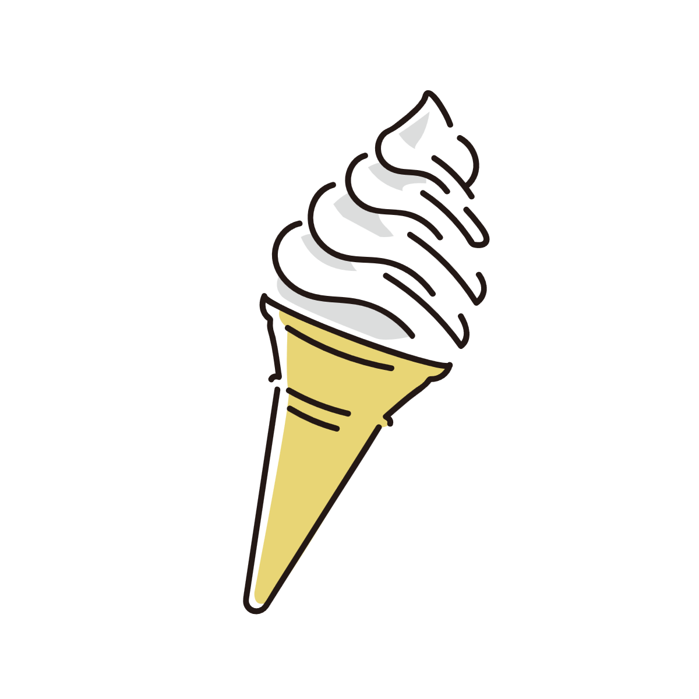

頭痛時に甘いものを食べると症状が和らぐのはなぜ？
頭痛が起きたときに、チョコレートや甘い飲み物などを口にすると、スッと症状が和らぐ感覚を経験したことがある人は少なくありません。
「甘いものを食べて一時的に楽になったものの、しばらくするとまた痛みが戻ってきた」という経験をしたこともあるかもしれません。
実は、甘いもので頭痛が和らぐ現象にはいくつかの異なるパターンがあり、その背景にある原因や体の反応はさまざまです。 ここでは、考えられる主な原因をいくつかのパターンに分け、それぞれの仕組みやセルフチェック、対処法を解説します。

1. 空腹や血糖値低下による頭痛
長時間の空腹や、デスクワークなどで脳を酷使したときに起こるタイプです。
健康な人では急激な低血糖になるわけではありませんが、エネルギー不足を補おうとして体がアドレナリンなどのホルモンを分泌し、血糖値を保とうとします。 この調整の過程や、脳の一時的なエネルギー枯渇によって頭痛が引き起こされます。そこに甘いものを摂ると、糖分が速やかに吸収されて脳のエネルギー代謝がスムーズになり、不快感が収まります。
- 食事の間隔がかなり空いていた
- 脳をたくさん使ったあと、頭の重さやぼんやり感を伴う頭痛が起きた
- 甘いものを口にした直後、スッと頭の重さが軽くなった
単に砂糖たっぷりのものを急に摂ると、その後の血糖値の乱高下（血糖値スパイク）を招き、再び頭痛や倦怠感を引き起こす原因になります。 甘いものだけに頼らず、ナッツやチーズ、全粒粉の食品など、血糖値が急上昇しにくいものも一緒に摂るか、食事の抜く時間を極力減らす工夫が効果的です。
2.片頭痛の初期症状による頭痛
「甘いものを食べたから治った」ように感じつつも、実は片頭痛の発作プロセスがすでに始まっていたというパターンです。
片頭痛が起きる数時間から1日前には、脳の視床下部が刺激され、「無性に甘いものが食べたくなる（食欲異常）」という前駆症状が現れます。 その結果として甘いものを食べ、その直後に本格的な発作期に入って自然に（あるいは別の要因で）落ち着いた場合、体感として「甘いもので治った」ように感じられます。
- 頭痛が始まる数時間〜1日前から、無性にチョコレートやケーキなどの甘いものが食べたくなっていた
- 甘いものを食べたあと、数時間〜翌日になってから「ズキズキ」と脈打つような本格的な頭痛がやってきた
このケースでは甘いものが頭痛を治したわけではなく、単に頭痛のスケジュール通りのタイミングだったと言えます。 甘いものでやり過ごそうとせず、早めに専用の頭痛薬（トリプタン製剤など）を使用する、暗い部屋で休むといった片頭痛への正しいアプローチに切り替える必要があります。 また、チョコレートなどは人によって片頭痛の引き金になることもあるため注意が必要です。

3. ストレスや緊張による頭痛
仕事のプレッシャーや疲労などで精神的な緊張がたまっているときに起こるタイプです。
強いストレスや緊張が続くと、頭や首の筋肉が緊張して血流が悪くなり、頭痛が起きます。 そこで甘いものを口にして「美味しい」「ホッとした」と感じることで、脳内で快楽物質やセロトニンなどの神経伝達物質が分泌されます。 このリラックス効果によって交感神経の優位な状態や体の強張りが緩み、痛みが和らぎます。
- 仕事のプレッシャーやイライラが続いていた
- 肩や首のコリ、頭全体が締め付けられるような痛みを伴っていた
- 甘いものを食べてホッとしたと同時に、体の力が抜けて痛みが軽くなった
甘いものによる一時的なリフレッシュだけでなく、ストレッチや入浴、適度な休息で日常的に心身の緊張をほぐすことが根本的な対策につながります。
4. カフェインやミネラル成分による直接アプローチ
チョコレートや甘いカフェオレ、ココアなどを選んだ場合に起こるタイプです。
糖分だけでなく、含まれているカフェインやマグネシウムなどの成分が作用しています。 カフェインには拡張した血管を適度に収縮させる働きがあり、マグネシウムには神経の興奮を落ち着かせる働きがあります。 これらが複合的に働くことで、頭痛の軽減につながります。
- 摂取したのがチョコレートや甘いカフェオレ、ココアなどだった
- 普段からカフェインを摂る習慣があり、血管が広がりかけているような感覚があった
もし「カフェインが切れたことによる頭痛」を甘いものでごまかしている場合、日常のカフェイン摂取量が影響している可能性があります。 心当たりがある場合は、カフェインの量を少しずつ見直すことが大切です。
⚠受診を考えた方がよいケース
頭痛に対して甘いものを食べて和らぐこと自体は珍しくありませんが、すべての頭痛を甘いものでコントロールできるわけではありません。
甘いものを日常的に頭痛薬代わりのように使っている場合や、食べてもほとんど改善しない場合、以前より明らかに痛みが強くなっている場合は別の原因も考えられます。
また、強い吐き気を伴う頭痛、急に強くなった頭痛、手足の動かしにくさやろれつの回りにくさがある場合などは、甘いもので様子を見ない方が安全です。
頭痛が頻繁に続く場合や、日常生活に影響するほど強い場合は、無理をせず医療機関への相談も考えた方がよいでしょう。
参考情報と注意点
食事が頭痛にどう作用するかは個人差があります。不安がある場合は、医療機関への相談も検討してください。
関連アイテム
 | お中元 ギフト 干し芋 茨城県産 紅はるか 訳あり 1kg 食べ物 和菓子 おやつ 送料無料 国産 無添加 切り落とし さつまいも スイーツ ダイエット お菓子 和スイーツ お祝い N1 価格:2990円 |